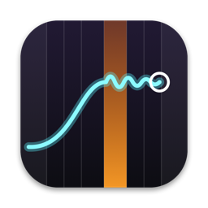
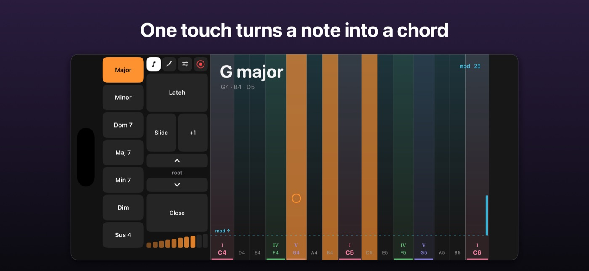

TonamiTonami is an instrument for iPhone, iPad and Mac. Every note snaps to the scale you choose, chords are one touch away, and you can see how music fits together as you play.

Glide a finger, Apple Pencil, mouse or trackpad. Left is low, right is high, and every note is in key.
Major, minor, sevenths and more, with inversions and voicings you can hear and see.
Turn any chord into a pattern, locked to the tempo.
I, IV and V are colour-coded, so the shape of a song is always in view.
iPads and iPhones join a Mac, each with their own instrument, and record as separate tracks.
Export MIDI files, or play GarageBand on your Mac live from your iPad or iPhone.
A room of iPads becomes a band that can't play a wrong note. Tonami includes a hands-on tour, and a free teacher's guide with five lesson plans is available: ask for a copy.